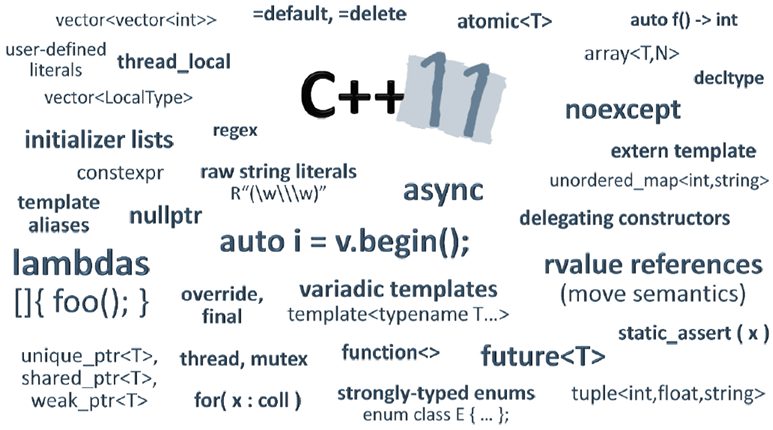
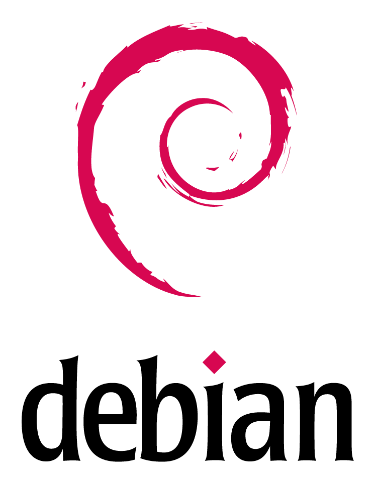
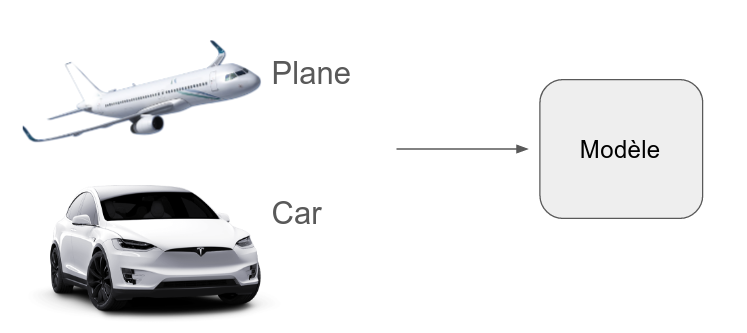
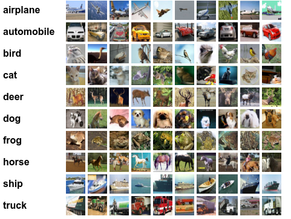
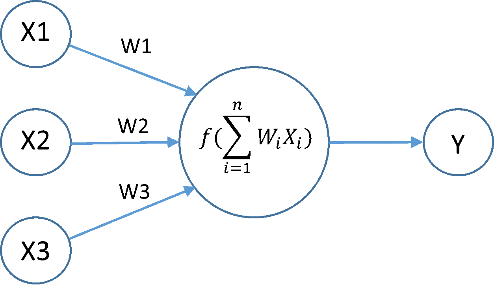
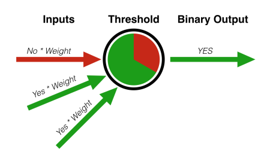
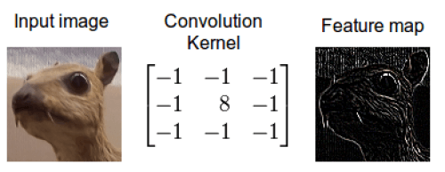
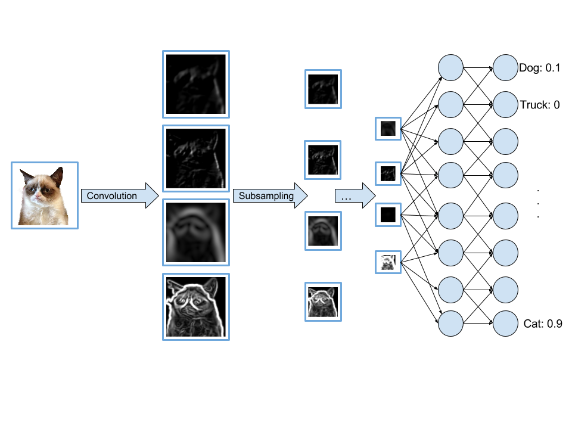

C++
The Beast is back !!
Agenda
- Présentation
- Technologie C++
- Application au Machine Learning
- Petite démo
Qui sommes-nous ?
- 11 ans d'expérience
- Monitoring passif du coeur de réseau d'opérateurs télécom
- Les opérateurs mobiles et les entreprises de chemin de fer (GSM-R)
- Analyse / Business Intelligence
Qui sommes-nous ?
Pierre Salmon
Qui sommes-nous ?
Nicolas Greffard

Quelles sont nos problématiques ?
- Gestion de gros volume
- Capacité de traitement
- Contrainte hardware
- Données sensibles
- Coût de maintenance
Pourquoi les technologies C++ ?
Au commencement : 1979 - 1983
C with Classes
Bjarne Stroustrup
1998 : standard ISO
2011 - 2014 : Le renouveau
- Le langage C++
- La bibliothèque Standard (STL)
- La bibliothèque Boost
Luttons contre les idées reçues
Idée reçue n°1 :
"Il n'y a pas de Garbage Collector : il faut gérer soi-même la mémoire et les objets"
"Il n'y a pas de Garbage Collector : il faut gérer soi-même la mémoire et les objets"
Idée reçue n°2
"Il y a du typage partout !
Sans IDE c'est trop dur"
Idée reçue n°3
"C'est un langage limité et bas niveau"
Idée reçue n°4
"Il y a pas grand chose dans la librairie standard"
Le "standard" C++ en 2014
La bibliothèque STL
container, algorithme, thread, filesystem, regexp, chrono, math,...
La bibliothèque BOOST
le reste... (ASIO, GPU, coroutine, fiber, Date, graph, ...) 142 modules
Et aussi : l'intégralité des bibliothèques C/C++
Et ce n'est qu'un aperçu
Comment faire du C++ aujourd'hui ?
Phoenix

Solution
- Docker
- Debian apt
- cbuild (Remy Chibois)


Un petit exemple d'utilisation concret
Problématiques data ?
$ Learn from the past to predict the future- No BS : essayer d'aller au delà des KPIs
- Ex: #dropped calls => churn probability
- #calls + #calls_fhz => fraudeur
Données sensibles
Prenons un exemple classique
- Classification: étiqueter/labelliser des objets (données) comme appartenant à une catégorie parmi plusieurs
- Ex : un utilisateur satisfait ou non; une image comme étant un visage ou un poisson
Classification supervisée
Le modèle apprend à discriminer les catégories à partir de données déjà étiquetées. C'est la phase d'apprentissage
Apprentissage
Classification supervisée
Une fois le modèle obtenu, on lui envoie des images non étiquetées et il prédit l'étiquette correspondant
Prédictions
Webservice de classification d'images
C++ versus Python
CIFAR10
Deep learning : CNN (réseau neuronal convolutif)
Derrière un serveur http qui reçoit des images et qui renvoie ce qu'elles représentent
Réseau neuronal
- Algorithme d'apprentissage
- Inspiré du fonctionnement du cerveau humain
- Perceptron en 1957 par F. Rosenblatt
Réseau neuronal

Réseau neuronal
Intuition :
- Si la somme des entrées tend vers +∞ alors la sortie tend vers 1
- Si la somme des entrées tend vers -∞ alors la sortie tend vers 0
Intuition
Backpropagation
- On calcule les sorties à partir des entrées
- On mesure l'erreur
- On fait remonter l'erreur dans le réseau via backpropagation (dérivées partielles) et on modifie les poids en conséquence
Réseau neuronal convolutif

Réseau neuronal convolutif
Réseau neuronal convolutif

Réseau neuronal convolutif
Lib : Caffe
- Développé en C++ avec wrapper python
- Comme la majorité des solutions...
- La définition du modèle se fait via fichier de config
Demo :
Drop me some awesome image
Et les perfs ?
- Python+Caffe+Flask : 30req/s
- Phoenix+Caffe+Nx : 60 req/s
Conclusion
- Utilisation des nouvelles technologies
- Industrialisation des POC DataMining
- Disponibilité des compétences (Go/R)
- Obtenir le maximum d'une architecture hardware
Remerciements
- Remy Chibois - cbuild
- Anthony Garreau - GUI
- Expandium
- Et l'équipe du DevFest